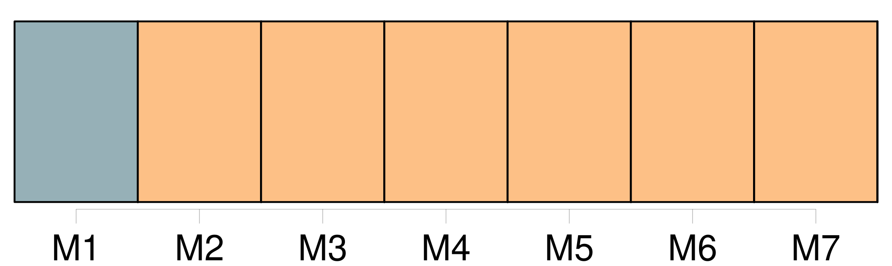
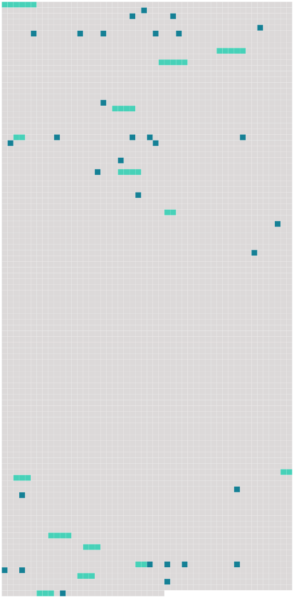

Longueur nb maillons : 45 mentions |
  |
[Tous les habitants de cette ville] , à l'exception d'un seul, étaient heureux de me confier une charge aussi importante. [2 phrases] Mais permettez -moi de vous dire que [vous] avez de singulières manières d'agir, dans cette ville …… [2 phrases]
» [4 phrases] Certes, [nous] n'avons pas adopté le système du capitaine Nemo ; [nous] faisons quelques excursions à terre quand cela [nous] plaît, mais [nous] préférons la vie dans la mer, qui [nous] est bonne. [Notre] ville, monsieur l'abbé, je vous la ferai voir demain, et je suis certain qu'elle vous intéressera. [3 phrases] oui, monsieur l'abbé, vous pourriez ajouter au bonheur de [tous les habitants de Némoville] , en acceptant de devenir le curé de cette ville. [3 phrases] — « Je ne vous ai pas dit, sans doute, la raison qui me pousse à vous faire cette offre, c'est que [tous les habitants de Némoville] appartiennent à la religion catholique romaine, et que vous n'y manqueriez pas de bien à faire. [15 phrases]
»
Le nouveau curé ne put s'empêcher de rire de cette boutade, et répliqua que, sans doute, quelques-uns [des habitants de Némoville] avaient dû connaître ces dangereux bipèdes sur la terre, et n'avaient trouvé rien de mieux pour leur échapper que de s'enfoncer sous l'eau. [6 phrases]
» [1 phrases] … [Vous] avez nommé [votre] ville, je le vois, d'après le capitaine Nemo.
»
» [7 phrases]
[On] n'était pas prisonnier à Némoville : chaque sous-marin se détachait facilement des couloirs extérieurs et pouvait seul remonter à la surface de la mer, quand il le désirait. [2 phrases]
[ils] étaient bien heureux [les gens de Némoville] ! [9 phrases] — « Pas trop mal, monsieur le gouverneur », répondit le domestique, « monsieur a bien hâte de connaître [notre] curé. [5 phrases]
» [3 phrases] — « Un vrai nom de chez [nous] , riposta Paul, un nom tout à fait comme il faut, dans une ville sous les eaux. [14 phrases] [On] prétendait que Marcelle et le médecin étaient fiancés, mais les mieux renseignés disaient que la jeune fille semblait plutôt craindre qu'aimer le médecin. [72 phrases]
Quiconque eût jeté un coup d'œil sur Némoville, eût envié le sort de [ses habitants] Cependant [tous les Némovilliens] n'étaient pas heureux, à commencer par le gouverneur, qui avait perdu beaucoup de son insouciance et de sa belle humeur. [4 phrases]
D'un autre côté, ce n'était plus un secret dans Némoville que le docteur Desmarais était très assidu auprès de la belle étrangère ; [on] le voyait souvent se diriger vers la demeure de Marcelle, mais [on] savait que ce n'était plus à Mlle Richard qu'il pensait. [14 phrases]
On n'y était pas grandement, surtout le dimanche, car [les habitants de Némoville] aimaient à assister à la messe et quelques-uns étaient obligés d'entendre l'office divin dans le couloir. [3 phrases] [Tout le monde] paraissait gai, ce soir -là à Némoville. [7 phrases] On entendit dans les couloirs des bruits de pas, c'étaient [les Némovilliens] [qui] venaient présenter [leurs] hommages à [leur] curé, et Roger, au nom de [tous] , offrit au prêtre l'église sous-marine : « [Nous] y avons [tous] travaillé, expliqua-t -il ; les uns ont modelé les statues, les autres ont fait les plans et les enfants eux -mêmes ont fait leur part, en recueillant sur la grève les colimaçons qui ornent le maître-autel.
» L'abbé était visiblement ému ; il ne pouvait que répéter : [2 phrases] Roger donna le signal de retourner chacun chez-soi, en demandant à [tous] de revenir lorsque la cloche annoncerait la messe de minuit. [5 phrases] Aussitôt les rues s'emplissent de [tous les habitants] , [qui] se dirigent vers l'église ; personne n'aurait voulu manquer cette première messe de minuit. |
 |
La ressource peut être téléchargée sur la page Ortolang
Si vous avez des questions ou vous voyez des erreurs, merci d'envoyer un mail à silvia.federzoni89@gmail.com
Site développé par S. Federzoni (contact)